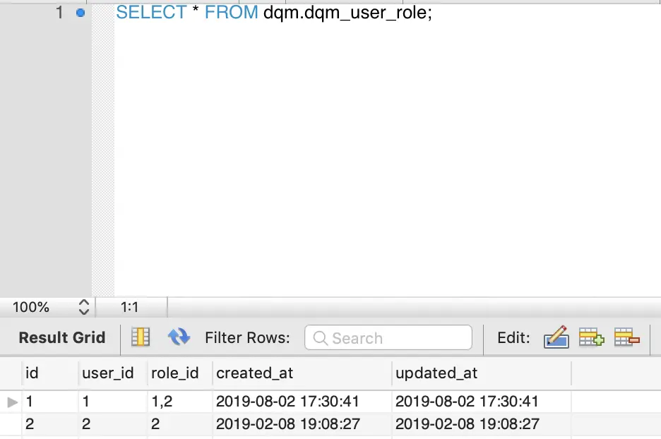

Go组件学习——gorm四步带你搞定DB增删改查
1、简介
ORM
Object-Relationl Mapping， 它的作用是映射数据库和对象之间的关系，方便我们在实现数据库操作的时候不用去写复杂的sql语句，把对数据库的操作上升到对于对象的操作。
gorm
gorm就是基于Go语言实现的ORM库。
类似于Java生态里大家听到过的Mybatis、Hibernate、SpringData等。
Github
https://github.com/jinzhu/gorm
官方文档
2、如何使用Gorm
只要四步就能上手gorm，可以尽情的沉浸在毫无技术含量的CRUD世界。
2.1 下载gorm库
go get -u gorm.io/gorm
go get -u gorm.io/driver/mysql
2.2 创建DB连接
建立数据库连接
package main
import (
"github.com/jinzhu/gorm"
_ "github.com/jinzhu/gorm/dialects/mysql"
)
func main() {
var err error
db, connErr := gorm.Open("mysql", "root:rootroot@/dqm?charset=utf8&parseTime=True&loc=Local")
if connErr != nil {
panic("failed to connect database")
}
defer db.Close()
db.SingularTable(true)
}
gorm支持很多数据源包括PostgreSQL、MySQL等。
这里连接的是MySQL，所以需要引用"github.com/jinzhu/gorm/dialects/mysql"驱动。
通过上面声明，已经获取数据库的连接。
db.SingularTable(true)这句的作用后面会提到。
2.3 创建映射表结构的struct
定义数据库表结构对应的struct
比如这里我们要操作的是表test表，表结构如下
CREATE TABLE `test` (
`id` bigint(20) NOT NULL,
`name` varchar(5) DEFAULT NULL,
`age` int(11) DEFAULT NULL,
PRIMARY KEY (`id`)
) ENGINE=InnoDB DEFAULT CHARSET=utf8mb4 COLLATE=utf8mb4_0900_ai_ci
于是我们对应可以定义struct结构如下
type Test struct {
ID int64 `gorm:"type:bigint(20);column:id;primary_key"`
Name string `gorm:"type:varchar(5);column:name"`
Age int `gorm:"type:int(11);column:age"`
}
每个字段后面的gorm是结构标记，可以用于声明对应数据库字段的属性。
比如ID后面的约束为该字段为bigint(20)类型，对应列表为id，且该字段为主键。
除此以外，还有更加丰富的标签定义参见官方文档：http://gorm.io/zh_CN/docs/models.html
2.4 CRUD
有了前面三步的铺垫，下面就可以执行真正写数据库操作了。
比如"增"
test := &Test{
ID:3,
Name:"jackie",
Age:18,
}
db.Create(test)
比如"删"
test := &Test{
ID:3,
Name:"jackie",
Age:18,
}
db.Delete(test)
比如"改"
test := &Test{
ID: 3,
Name: "hello",
Age: 18,
}
db.Model(&test).Update("name", "world")
比如"查"
var testResult Test
db.Where("name = ?", "hello").First(&testResult)
fmt.Println("result: ", testResult)
如果只是想做个纯粹的CRUDer，掌握上面四步就算是会用gorm了。
如果还想来点花式的，更深入的，继续往下看~~~
3、表名和结构体如何映射
从上面四步，我们只看到在创建DB链接的时候，提供的信息仅仅到数据库，那么gorm是如何做到将表结构和你定义的struct映射起来的呢？
有三种方式可以实现，如果以下三种方式都没有实现，如果你是创建表，则gorm默认会在你定义的struct名后面加上”s“，比如上面就会创建tests表。
3.1 db.SingularTable(true)
通过db.SingularTable(true)，gorm会在创建表的时候去掉”s“的后缀
3.2 实现TableName方法
func (Test) TableName() string {
return "test"
}
TableName方法定义在scope.go的tabler接口中
type tabler interface {
TableName() string
}
3.3 通过Table API声明
db.Table("test").Where("name = ?", "hello").First(&testResult)
在CRUD前，指明需要操作的表名也是OK的。
4、其他花式操作
下面花式API操作使用表dqm_user_role，对应struct如下
type DqmUserRole struct {
ID int64 `gorm:"column:id;primary_key" json:"id"`
UserId string `gorm:"column:user_id" json:"user_id"`
RoleId string `gorm:"column:role_id" json:"role_id"`
CreatedAt time.Time `gorm:"column:created_at" json:"created_at"`
UpdatedAt time.Time `gorm:"column:updated_at" json:"updated_at"`
}
表中初始数据如下

image.png
以下API均亲测可用
First
var dqmUserRole DqmUserRole
// 按照主键顺序的第一条记录
db.First(&dqmUserRole)
fmt.Println("roleId: ", dqmUserRole.RoleId)
Last
var dqmUserRole1 DqmUserRole
// 按照主键顺序的最后一条记录
db.Last(&dqmUserRole1)
fmt.Println("roleId: ", dqmUserRole1.RoleId)
Find
var dqmUserRoels []DqmUserRole
// 所有记录
db.Find(&dqmUserRoels)
fmt.Println("dqmUserRoles: ", dqmUserRoels)
Where
var dqmUserRole3 DqmUserRole
// 根据条件查询得到满足条件的第一条记录
db.Where("role_id = ?", "2").First(&dqmUserRole3)
fmt.Println("where roleId: ", dqmUserRole3.RoleId)
var dqmUserRoles4 []DqmUserRole
// 根据条件查询得到满足条件的所有记录
db.Where("user_id = ?", "1").Find(&dqmUserRoles4)
fmt.Println("where dqmUserRoles: ", dqmUserRoles4)
var dqmUserRole5 []DqmUserRole
// like模糊查询
db.Where("role_id like ?", "%2").Find(&dqmUserRole5)
fmt.Println("where dqmUserRoles: ", dqmUserRole5)
var dqmUserRole6 []DqmUserRole
db.Where("updated_at > ?", "2019-02-08 18:08:27").Find(&dqmUserRole6)
fmt.Println("where dqmUserRoles: ", dqmUserRole6)
var dqmUserRole7 DqmUserRole
// struct结构查询条件
db.Where(&DqmUserRole{RoleId: "1,2", UserId: "1"}).First(&dqmUserRole7)
fmt.Println("where dqmUserRole: ", dqmUserRole7)
var dqmUserRole8 DqmUserRole
// map结构查询条件
db.Where(map[string]interface{}{"role_id": "1,2", "user_id": "1"}).Find(&dqmUserRole8)
fmt.Println("where dqmUserRole: ", dqmUserRole8)
Not
var dqmUserRole9 DqmUserRole
db.Not([]int64{1}).First(&dqmUserRole9)
fmt.Println("not dqmUserRole: ", dqmUserRole9)
Or
var dqmUserRole10 []DqmUserRole
db.Where(&DqmUserRole{RoleId: "1,2"}).Or(map[string]interface{}{"user_id": "2"}).Find(&dqmUserRole10)
fmt.Println("or dqmUserRoles: ", dqmUserRole10)
FirstOrInit和Attrs
var dqmUserRole11 DqmUserRole
// 查不到该条记录，则使用attrs值替换
db.Where("user_id = ?", "0").Attrs("role_id", "12").FirstOrInit(&dqmUserRole11)
fmt.Println("after FirstOrInit: ", dqmUserRole11)
var dqmUserRole12 DqmUserRole
// 查到记录，则使用数据库中的值
db.Where("user_id = ?", "1").Attrs("role_id", "2").FirstOrInit(&dqmUserRole12)
fmt.Println("after FirstOrInit: ", dqmUserRole12)
FirstOrInit和Assign
var dqmUserRole13 DqmUserRole
// 不管是否找到对应记录，使用Assign值替代查询到的值
db.Where("role_id = ?", "1,2").Assign(DqmUserRole{UserId: "15"}).FirstOrInit(&dqmUserRole13)
fmt.Println("assign dqmUserRole: ", dqmUserRole13)
FirstOrCreate
var dqmUserRole14 DqmUserRole
// 如果记录存在则返回结果，如果不存在则创建
db.Where(&DqmUserRole{UserId: "3", RoleId: "3"}).FirstOrCreate(&dqmUserRole14)
fmt.Println("firstOrCreate dqmUserRole: ", dqmUserRole14)
Order
var dqmUserRole16 []DqmUserRole
db.Order("user_id desc").Find(&dqmUserRole16) // 注意这里的order要在find前面，否则不生效
fmt.Println("order dqmUserRoles: ", dqmUserRole16)
Limit和Offset
var dqmUserRole18 []DqmUserRole
db.Limit(10).Offset(2).Find(&dqmUserRole18) // 如果只有offset没有limit则不会生效
fmt.Println("offset dqmUserRoles: ", dqmUserRole18)
Scan
type Result struct {
Id int64
}
var results []Result
db.Select("id").Where("user_id in (?)", []string{"1", "2"}).Find(&dqmUserRole20).Scan(&results)
fmt.Println("ids: ", results)
支持执行原生sql
var dqmUserRole24 []DqmUserRole
db.Exec("select * from dqm_user_role").Find(&dqmUserRole24)
fmt.Println("sql dqmUserRole: ", dqmUserRole24)
事务
tx := db.Begin()
defer func() {
if r := recover(); r != nil {
tx.Rollback()
}
if err != nil {
tx.Rollback()
} else {
tx.Commit()
}
}()
if err = tx.Create(&DqmUserRole{UserId: "8", RoleId: "8"}).Error; err != nil {
//tx.Rollback()
//return
}
if err = tx.Create(&DqmUserRole{UserId: "9", RoleId: "9"}).Error; err != nil {
//tx.Rollback()
//return
}
错误处理
var dqmUserRole25 DqmUserRole
err = db.Where("role_id = ?", 54321).First(&dqmUserRole25).Error
if err == gorm.ErrRecordNotFound {
fmt.Println("ErrRecordNotFound, record not found")
} else {
fmt.Println("err: ", err)
}
fmt.Println("err dqmUserRole: ", dqmUserRole25)
5、总结
gorm作为一款orm库，几乎满足了一个CRUDer的一切想象。实现灵活，花样繁多。
有了gorm，就不需要再在代码中维护sql语句了。
后面有时间会再看看gorm的实现，作为国人开源的第一个orm库，目前star已经超过15k，值得深入学习下。